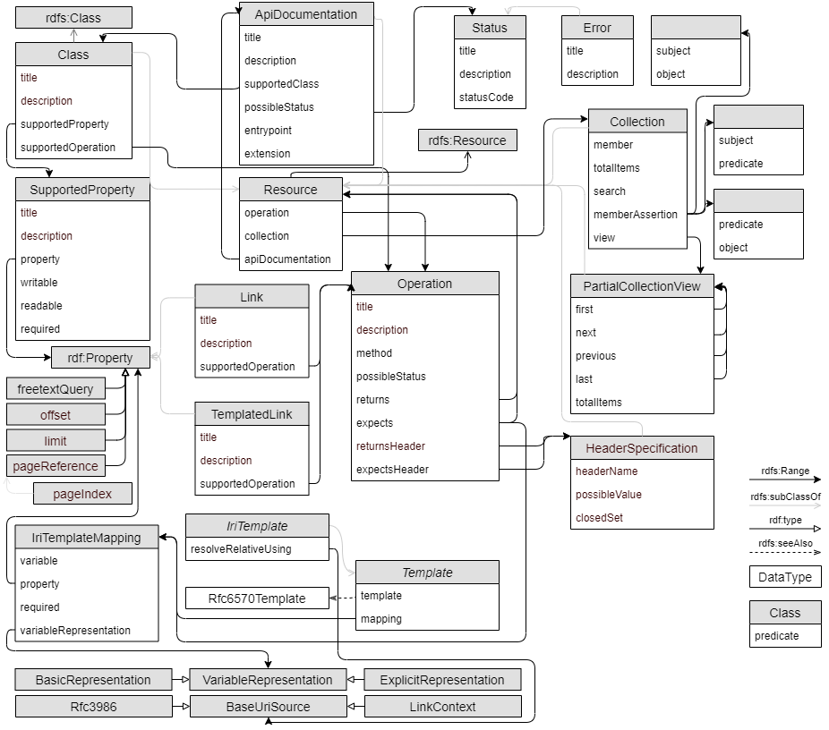

Hydra is a lightweight vocabulary to create hypermedia-driven Web APIs. By specifying a number of concepts commonly used in Web APIs it renders the creation of generic API clients possible.
To participate in the development of this specification please file bugs and issues in the issue tracker.
Coping with the ever-increasing amount of data becomes increasingly challenging. To alleviate the information overload put on people, systems are progressively being connected directly to each other. They exchange, analyze, and manipulate humongous amounts of data without any human interaction. Most current solutions, however, do not exploit the whole potential of the architecture of the World Wide Web and completely ignore the possibilities offered by Linked Data technologies.
The combination of the REST architectural style and the Linked Data principles offer opportunities to advance the Web of machines in a similar way that hypertext did for the human Web. Most building blocks exist already and are in place but they are rarely used together. Hydra tries to fill that gap. It allows data to be enriched with machine-readable affordances which enable interaction. This not only addresses the problem that Linked Data is still mostly read-only, but it also paves the way for a completely new breed of interoperable Web APIs. The fact that it enables the creation of composable contracts means that interaction models of Web APIs can be reused at an unprecedented granularity.
This specification describes the conformance criteria for Hydra API descriptions and Hydra clients. This criteria is relevant to authors, authoring tool implementers, and client implementers. All authoring guidelines, diagrams, examples, and notes in this specification are non-normative, as are all sections explicitly marked as non-normative. Everything else in this specification is normative.
The key words MUST, MUST NOT, REQUIRED, SHALL, SHALL NOT, SHOULD, SHOULD NOT, RECOMMENDED, NOT RECOMMENDED, MAY, and OPTIONAL in this specification have the meaning defined in [[!RFC2119]].
The basic idea behind Hydra is to provide a vocabulary which enables a server to advertise valid state transitions to a client. A client can then use this information to construct HTTP requests which modify the server’s state so that a certain desired goal is achieved. Since all the information about the valid state transitions is exchanged in a machine-processable way at runtime instead of being hardcoded into the client at design time, clients can be decoupled from the server and adapt to changes more easily.
The figure below illustrates the Hydra core vocabulary (the figure’s intention is to show how Hydra is used rather than its precise definition).

The Hydra core vocabulary
An alphabetical index of the classes and properties of Hydra are given below. All the terms are hyperlinked to their detailed description for quick reference.
Document prefixes
Should we reuse things such as HTTP in RDF or should we redefine it and just declare it as equivalent?